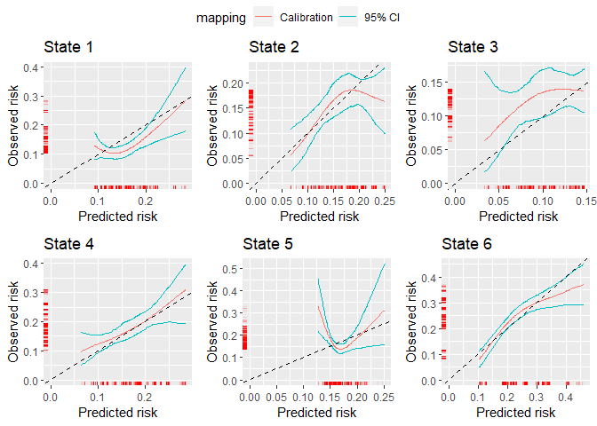
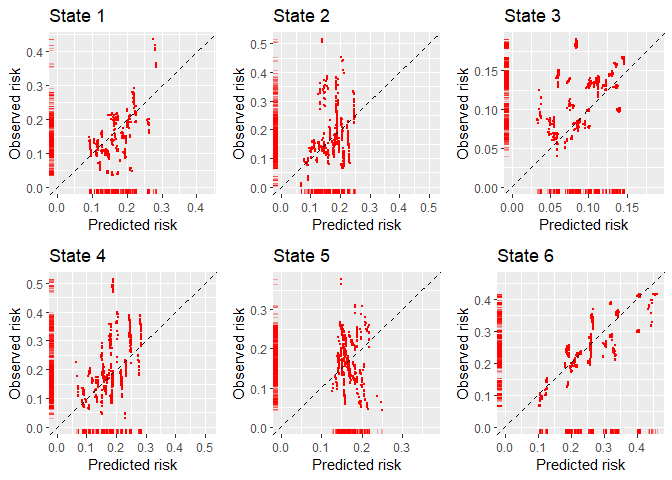

The goal of calibmsm is to provide a set of tools for producing calibration plots for validating an existing (i.e. previously developed) multistate model.
Installation
You can install the development version of calibmsm from GitHub with:
# install.packages("devtools")
devtools::install_github("alexpate30/calibmsm")Example
This is a basic example which shows you how to assess the calibration of the transition probabilities at 5 years follow up for individuals out of state j at time s. The predicted transition probabilities are stored in tps0, the individuals data are stored in ebmtcal, and the data is msdata format are stored in msebmtcal. Calibration curves are estimated using calc_calib_blr. Inverse probability of censoring weights are calculated based on variables year, age, prophylaxis and donor gender match. The calibration curves are estimated using restricted cubic splines. A 95% confidence interval is calculated using bootstrapping with 200 bootstrap replicates.
## Load calibmsm
library(calibmsm)
## Extract relevant predicted risks from tps0
tp.pred <- dplyr::select(dplyr::filter(tps0, j == 1), any_of(paste("pstate", 1:6, sep = "")))
## Calculate observed event probabilities
dat.calib.blr <-
calc_calib_blr(data.mstate = msebmtcal,
data.raw = ebmtcal,
j=1,
s=0,
t.eval = 1826,
tp.pred = tp.pred,
curve.type = "rcs",
rcs.nk = 3,
w.covs = c("year", "agecl", "proph", "match"),
CI = 95,
CI.R.boot = 200)
## Produce summary
summary(dat.calib.blr)
#> There were non-zero predicted transition probabilities into states 1,2,3,4,5,6
#>
#> Calibration curves have been estimated for transitions into states 1,2,3,4,5,6
#>
#> Calibration was assessed at time 1826 and calibration was assessed in a landmarked cohort of individuals in state j = 1 at time s = 0
#>
#> A 95% confidence interval was estimated withb200 bootstrap replicates
#>
#> The estimated calibration curves are stored in list element `plotdata`:
#>
#> $state1
#> id pred obs obs.lower obs.upper
#> 2 2 0.11401890 0.1095897 0.08523354 0.1377938
#> 4 4 0.13838778 0.1036308 0.08431507 0.1305613
#> 5 5 0.12332255 0.1051035 0.08515655 0.1283241
#> 7 7 0.09737975 0.1236322 0.08395369 0.1640331
#> 10 10 0.11371889 0.1097779 0.08511766 0.1382789
#> 13 13 0.11385388 0.1096929 0.08516975 0.1380599
#>
#> $state2
#> id pred obs obs.lower obs.upper
#> 2 2 0.2316569 0.1698031 0.1243572 0.2225723
#> 4 4 0.1836189 0.1855591 0.1507925 0.2188455
#> 5 5 0.1609740 0.1759804 0.1391210 0.2102321
#> 7 7 0.2121470 0.1785688 0.1447495 0.2122745
#> 10 10 0.2315632 0.1698443 0.1245111 0.2224791
#> 13 13 0.2316571 0.1698030 0.1243568 0.2225726
#>
#> $state3
#> id pred obs obs.lower obs.upper
#> 2 2 0.08442692 0.12485834 0.09431395 0.1569063
#> 4 4 0.07579429 0.11666056 0.08460027 0.1451781
#> 5 5 0.05508100 0.09189341 0.04519272 0.1367071
#> 7 7 0.06154308 0.10011560 0.05905272 0.1372340
#> 10 10 0.08440940 0.12484341 0.09430722 0.1568832
#> 13 13 0.08257284 0.12323792 0.09363889 0.1543054
#>
#> $state4
#> id pred obs obs.lower obs.upper
#> 2 2 0.2328398 0.2427580 0.1930546 0.2863106
#> 4 4 0.2179331 0.2243106 0.1883121 0.2584585
#> 5 5 0.1828176 0.1851051 0.1550640 0.2170441
#> 7 7 0.2206335 0.2275985 0.1914898 0.2624447
#> 10 10 0.2326989 0.2425807 0.1929586 0.2859993
#> 13 13 0.2326047 0.2424622 0.1928944 0.2857912
#>
#> $state5
#> id pred obs obs.lower obs.upper
#> 2 2 0.1481977 0.1909795 0.1654396 0.2182979
#> 4 4 0.1538475 0.1654523 0.1484613 0.1830273
#> 5 5 0.1425950 0.2215190 0.1829005 0.2663921
#> 7 7 0.1441960 0.2123460 0.1775459 0.2495635
#> 10 10 0.1488068 0.1879278 0.1636959 0.2139830
#> 13 13 0.1505092 0.1797461 0.1588683 0.2021889
#>
#> $state6
#> id pred obs obs.lower obs.upper
#> 2 2 0.1888598 0.2069354 0.1856979 0.2330498
#> 4 4 0.2304185 0.2542212 0.2292881 0.2813828
#> 5 5 0.3352099 0.3163102 0.2810037 0.3582892
#> 7 7 0.2641006 0.2800368 0.2594873 0.3064739
#> 10 10 0.1888028 0.2068586 0.1856305 0.2329424
#> 13 13 0.1888022 0.2068578 0.1856298 0.2329413
## Plot calibration plots
plot(dat.calib.blr, combine = TRUE, nrow = 2, ncol = 3)
Calibration scatter plots can also be estimated using calc_calib_mlr.
## Calculate observed event probabilities
dat.calib.mlr <-
calc_calib_mlr(data.mstate = msebmtcal,
data.raw = ebmtcal,
j=1,
s=0,
t.eval = 1826,
tp.pred = tp.pred,
w.covs = c("year", "agecl", "proph", "match"))
## Produce summary
summary(dat.calib.mlr)
#> There were non-zero predicted transition probabilities into states 1,2,3,4,5,6
#>
#> Calibration was assessed at time 1826 and calibration was assessed in a landmarked cohort of individuals in state j = 1 at time s = 0
#>
#> The estimated calibration scatter plots are stored in list element `plotdata`:
#>
#> $state1
#> id pred obs
#> 1 2 0.11401890 0.09197312
#> 2 4 0.13838778 0.09765456
#> 3 5 0.12332255 0.05055278
#> 4 7 0.09737975 0.10509072
#> 5 10 0.11371889 0.09474050
#> 6 13 0.11385388 0.09760555
#>
#> $state2
#> id pred obs
#> 1 2 0.2316569 0.09628315
#> 2 4 0.1836189 0.16086862
#> 3 5 0.1609740 0.08120535
#> 4 7 0.2121470 0.10759914
#> 5 10 0.2315632 0.09813159
#> 6 13 0.2316571 0.10453033
#>
#> $state3
#> id pred obs
#> 1 2 0.08442692 0.17888790
#> 2 4 0.07579429 0.13870298
#> 3 5 0.05508100 0.07723274
#> 4 7 0.06154308 0.14719397
#> 5 10 0.08440940 0.18112318
#> 6 13 0.08257284 0.18206659
#>
#> $state4
#> id pred obs
#> 1 2 0.2328398 0.2170579
#> 2 4 0.2179331 0.1712690
#> 3 5 0.1828176 0.3509679
#> 4 7 0.2206335 0.1452834
#> 5 10 0.2326989 0.2114548
#> 6 13 0.2326047 0.2086145
#>
#> $state5
#> id pred obs
#> 1 2 0.1481977 0.1871729
#> 2 4 0.1538475 0.2017993
#> 3 5 0.1425950 0.2297903
#> 4 7 0.1441960 0.1500001
#> 5 10 0.1488068 0.1815475
#> 6 13 0.1505092 0.1686992
#>
#> $state6
#> id pred obs
#> 1 2 0.1888598 0.2286251
#> 2 4 0.2304185 0.2297056
#> 3 5 0.3352099 0.2102509
#> 4 7 0.2641006 0.3448326
#> 5 10 0.1888028 0.2330024
#> 6 13 0.1888022 0.2384838
## Plot calibration plots
plot(dat.calib.mlr, combine = TRUE, nrow = 2, ncol = 3)
Getting help
If you encounter a bug, please file an issue with a minimal reproducible example on GitHub.
NB TO DELETE - A USEFUL NOTE FOR NOW:: You’ll still need to render README.Rmd regularly, to keep README.md up-to-date. devtools::build_readme() is handy for this. You could also use GitHub Actions to re-render README.Rmd every time you push. An example workflow can be found here: https://github.com/r-lib/actions/tree/v1/examples.